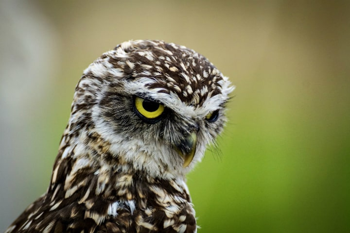

 В мире насчитывается более 10 тысяч видов птиц , обитающих в различных экосистемах от Арктики до Антарктики . Многие виды ежегодно с овершают перелеты на длинные расстояния, гораздо большее количество совершают более короткие спонтанные путешествия .
В мире насчитывается более 10 тысяч видов птиц , обитающих в различных экосистемах от Арктики до Антарктики . Многие виды ежегодно совершают перелеты на длинные расстояния, гораздо большее количество совершают более короткие спонтанные путешествия .